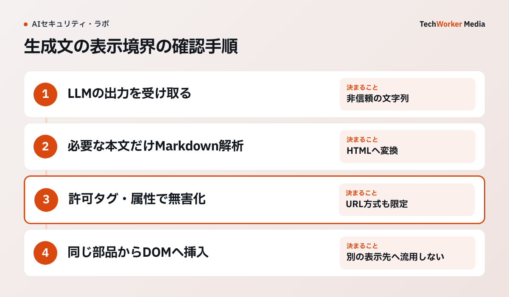

生成AIのMarkdown表示で、XSSを減らすにはどう実装しますか？
変換、無害化、DOM挿入の順に固定し、まず全出力を文字列で表示して許可を絞ります。
生成AIの回答をMarkdownからHTMLへ変換し、そのまま画面へ差し込む実装は危険です。LLMの出力は、安全な文章とは限りません。
利用者入力、RAG文書、ウェブページ、外部機能の結果を通じて、攻撃者が間接的に制御できる入力として扱います。
OWASP GenAI Security Projectは、ある問題を「不適切な出力処理」と呼びます[1]。LLM出力を検証・無害化せず、後続処理へ渡す問題です。ブラウザで解釈すれば、XSS（画面へ悪意あるスクリプトを混入させる攻撃）につながります。サーバー側へ渡せば、SSRFや遠隔コード実行へ広がり得ます。
本稿の対策はXSSの経路を減らすもので、完全防止を保証しません。
Markdown表示は、どんな手順で安全にしますか？
出力工程の固定、表示先ごとの無害化、リンクと画像の制限、Trusted Types、回帰試験の5つです。

最初の実装では、状態・エラー・引用元を文字列で表示します。本文に箇条書きやリンクが必要な画面だけ、Markdown解析とHTML無害化を通します。外部画像の読み込みは別に許可を決め、装飾のために実行可能な要素を増やしません。
- 出力工程を固定します。順序は、LLM文字列、Markdown解析、HTML無害化、DOM挿入です。Markdownを変換できても、安全にはなりません。攻撃面になるのは、生のHTMLを許す設定、
javascript:URL、画像の外部読込、イベント処理属性です。SVGやMathML、壊れた記述のブラウザ補正も攻撃面です。解析前の文字列置換で<script>を消しても、別のタグ、属性、URLの解釈は網羅できません。DOMPurifyは、文字列の正規表現に頼りません。ブラウザと同じDOM解析器で解釈し、許可一覧にない要素と属性を落とします[5]。 - 無害化は表示先に合わせます。OWASPのXSS対策手引きは、必要な符号化が表示先で違うと説明します。HTML本文、属性、URL、JavaScript、CSSです[2]。HTMLとして無害化した文字列を、
style、スクリプト、属性、SVGへ再利用しません。DOMPurifyの脅威モデルも、別の表示先へ移すと保護対象外になると明記します[6]。無害化後にリンクを書き換えると、検査後の内容が変わります。変換・無害化・挿入の責務は、一つの部品へ閉じます。サーバー側描画でも同じです。無害化処理とDOM実装は、依存部品として版を固定し、脆弱性情報を監視します。 - リンクと画像を絞ります。安全なタグでも、外部通信や追跡を起こします。
<a>では、https:と必要な社内方式だけを許可します。javascript:、data:、未知の方式は拒否します。外部リンクには遷移先ドメインを表示します。新しいタブを開くなら、rel="noopener noreferrer"を付けます。LLMが表示文字列を「社内資料」と書いても、実URLが外部ドメインなら外部として扱います。画像は、閲覧時の外部通信と追跡を起こします。外部画像を既定で読まない、許可ドメインを限定する、中継サーバーで内容種別と容量を検査する、という選択肢があります。 - Trusted Typesで抜け道を減らします。W3CのTrusted Typesは、
innerHTML等の危険な挿入先で、通常の文字列を拒みます。規則が作った型付き値だけを渡す仕様です[3]。MDNでは、2026年2月から主要ブラウザでBaselineになったとされています[4]。CSP（Content Security Policy）でrequire-trusted-types-for 'script'を有効にします。無害化処理を通した箇所だけ、TrustedHTMLを作ります。生のLLM出力をinnerHTMLへ渡す事故を、ブラウザ側で止められます。最初は報告専用で違反箇所を集め、旧式の部品を洗い出してから強制へ移します。 - 5つの回帰試験を公開条件にします。公開前に、次を確認します。
- 生のHTMLを含むMarkdownが、許可タグだけへ縮むか。
javascript:、不正なdata:、プロトコル相対URLが拒否されるか。- SVG、MathML、template、壊れた入れ子が、実行可能なDOMにならないか。
- 無害化後の出力が、別の表示先へ渡らないか。
- 新しい部品でCSPやTrusted Typesの違反が増えていないか。
うまくいかない例には、どんなものがありますか？
変換できたことを安全と見なすこと、出力の流用、Trusted TypesやCSPへの過信が典型です。
- Markdown解析器を安全境界と考えます。変換できたことは、安全になったことを意味しません。
- 解析前の文字列置換で済ませます。別のタグ、属性、URL、ブラウザ解析器の解釈を網羅できません。
- 無害化済みの文字列を別の表示先へ流用します。保護の対象外です。
- 古い無害化処理やDOMライブラリを使い続けます。サーバーで処理したHTMLが、ブラウザで危険なDOMへ変わることがあります。DOMPurifyでは、2026年にも特定構成の回避方法が脆弱性情報として修正されています[7]。一度の導入で安全とは言えません。版、設定、挿入先の組合せを試験します。
- Trusted Typesを無害化の代わりにします。Trusted Typesは、無害化処理の正しさを保証しません。危険な規則がすべての文字列を通せば、防御になりません。未対応ブラウザも考慮が必要です。
- CSPで十分と考えます。CSPは、インラインスクリプトの一部を止める補助層です。安全なDOM構築の代わりにはなりません。
- コードブロックを実行可能な環境へ渡します。AIが生成したシェル、SQL、HTML、JavaScriptを、確認表示のつもりで隔離環境へ渡してはいけません。コードブロックは文字列として表示し、実行ボタンと分離します。
- プロンプトインジェクションの検知成功を安全の根拠にします。RAG（検索した文書を回答生成へ渡す仕組み）文書の信頼度判定が成功しても、出力を無条件にHTMLとして扱う理由にはなりません。モデルが自発的に危険な記述を返す可能性、解析器の差、後処理の不具合が残ります。
表示する要素ごとに、どう扱いますか？
状態表示は文字列、本文は許可タグだけ、リンクと画像は方式を絞り、実行系の要素は原則禁止です。
| 要素 | 扱い |
|---|---|
| モデル名、状態、引用元、エラー | HTMLを作らず、textContent相当で表示する |
| Markdownが必要な本文 | 許可タグをp、ul、ol、li、strong、em、code、pre、blockquote、a程度へ絞る |
| リンク | https:と必要な社内方式だけ許可。javascript:、data:、未知の方式は拒否 |
| 外部画像 | 既定で読み込まない。許可ドメインの限定、中継サーバーでの検査を選ぶ |
| iframe、動画、音声、入力フォーム、style、SVG、MathML | 原則禁止。必要性を説明できるものだけ許可する |
| コードブロック | 文字列として表示し、実行ボタンと分離する |
よくある質問
よくありません。LLMの出力は、利用者入力、RAG文書、ウェブページなどを通じて、攻撃者が間接的に制御し得ます。XSSにつながります。まず全出力を文字列で表示します。必要な画面だけMarkdownを許可し、HTML無害化を通してから挿入します。
防げません。生のHTMLを許す設定、javascript: URL、画像の外部読込が攻撃面になります。イベント処理属性、SVGやMathMLも攻撃面です。DOM解析器で解釈して許可一覧にない要素と属性を落とす無害化処理を通し、許可タグも絞ります。
不要にはなりません。Trusted Typesは、危険な挿入先で通常の文字列を拒む補助層です。無害化処理の正しさは保証しません。CSPも安全なDOM構築の代替ではないため、無害化の版・設定・挿入先の組合せを試験します。
次の一歩は何から始めればよいですか？
まず全出力を文字列で表示し、必要な画面だけMarkdownを許可して、条件を文書化します。
許可するタグ、属性、URL方式を文書化します。無害化部品以外から、HTMLの挿入先へ到達できないようにします。この小さな境界のほうが、禁止語を増やすより検証できます。
W3C Trusted TypesはWorking Draftです。採用時は、ブラウザ対応、無害化処理の版、実際の挿入先を再確認してください。
出典と確認範囲
資料確認日：2026年9月28日。本文中の手順例は編集部の提案で、導入効果の実測値ではありません。